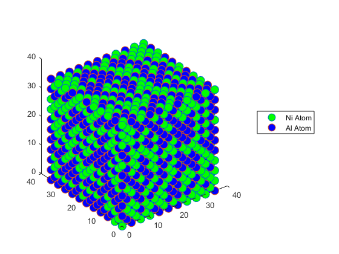

clc
clear
Type = 'FCC';
element = 'Ni';
a0 = 3.524;
mass = 58.693;
atom1 = [0.0 * a0, 0.0 * a0, 0.0 * a0];
atom2 = [0.5 * a0, 0.5 * a0, 0.0 * a0];
atom3 = [0.5 * a0, 0.0 * a0, 0.5 * a0];
atom4 = [0.0 * a0, 0.5 * a0, 0.5 * a0];
ux = [1.0 * a0, 0.0, 0.0];
uy = [0.0, 1.0 * a0, 0.0];
uz = [0.0, 0.0, 1.0 * a0];
id = 0;
for i = 0:10
for j = 0:10
for k = 0:10
vector = ux * i + uy * j + uz * k;
id = id + 1;
crystal(id, 1:3) = atom1 + vector;
id = id + 1;
crystal(id, 1:3) = atom2 + vector;
id = id + 1;
crystal(id, 1:3) = atom3 + vector;
id = id + 1;
crystal(id, 1:3) = atom4 + vector;
end
end
end
crystal = lattice_slicer(crystal, [0.0, 0.0, 0.0], [a0*10, a0*10, a0*10]);
id = length(crystal);
rand_list = randperm(id);
Ni_atoms_indices = rand_list(1:ceil(id / 2));
Al_atoms_indices = rand_list((ceil(id / 2) + 1):id);
fprintf('Total amount of Ni atoms: %d\n', length(Ni_atoms_indices));
fprintf('Total amount of Al atoms: %d\n', length(Al_atoms_indices));
Ni_id = 1;
Al_id = 1;
for i = 1:id
if find(Ni_atoms_indices == i)
Ni_crystal(Ni_id, 1:3) = crystal(i, 1:3);
Ni_id = Ni_id + 1;
else
Al_crystal(Al_id, 1:3) = crystal(i, 1:3);
Al_id = Al_id + 1;
end
end
plot3(Ni_crystal(:, 1), Ni_crystal(:, 2), Ni_crystal(:, 3), 'o', 'MarkerFaceColor','g', 'MarkerSize', 10);
axis square;
hold on;
plot3(Al_crystal(:, 1), Al_crystal(:, 2), Al_crystal(:, 3), 'o', 'MarkerFaceColor','b', 'MarkerSize', 10);
axis square;
hold off;
pdb_file_ID = fopen('FCC-NiAl lattice.pdb', 'w');
txt_file_ID = fopen('FCC-NiAl lattice.txt', 'w');
rasmol_format_spec = '%-6s%-5d %-4s%-1s%-3s %-4d%-1s %-8.3f%-8.3f%-8.3f\n';
table_format_spec = '%-5s\t%-8.3f\t%-8.3f\t%-8.3f\n';
num = 0;
for id = 1:length(Ni_crystal)
num = num + 1;
fprintf(pdb_file_ID, rasmol_format_spec, 'ATOM', num, element, ' ', ' ', 1, ' ', Ni_crystal(id, 1), Ni_crystal(id, 2), Ni_crystal(id, 3));
fprintf(txt_file_ID, table_format_spec, '1', Ni_crystal(id, 1), Ni_crystal(id, 2), Ni_crystal(id, 3));
end
num = 0;
for id = 1:length(Al_crystal)
num = num + 1;
fprintf(pdb_file_ID, rasmol_format_spec, 'ATOM', num, 'Al', ' ', ' ', 1, ' ', Al_crystal(id, 1), Al_crystal(id, 2), Al_crystal(id, 3));
fprintf(txt_file_ID, table_format_spec, '2', Al_crystal(id, 1), Al_crystal(id, 2), Al_crystal(id, 3));
end
fclose(pdb_file_ID);
fclose(txt_file_ID);
function output_lattice = lattice_slicer(input_lattice, min_limit, max_limit)
id = 1;
for i = 1:length(input_lattice)
if sum(input_lattice(i, 1:3) >= min_limit) == 3 && sum(input_lattice(i, 1:3) <= max_limit) == 3
output_lattice(id, 1:3) = input_lattice(i, 1:3);
id = id + 1;
end
end
end
Total amount of Ni atoms: 2316
Total amount of Al atoms: 2315
